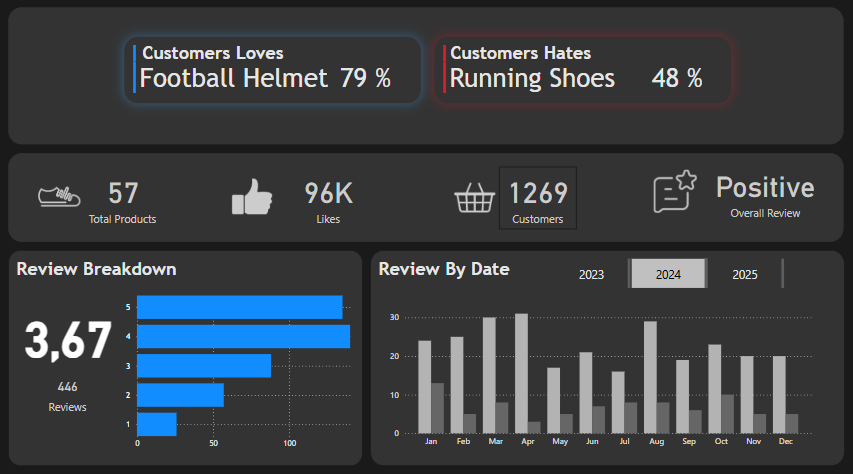
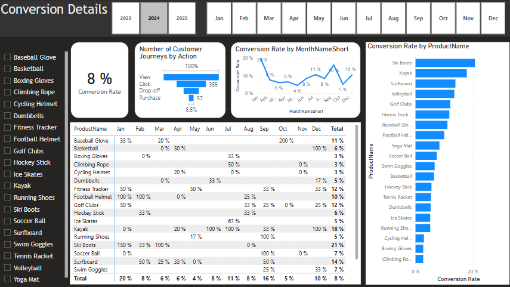
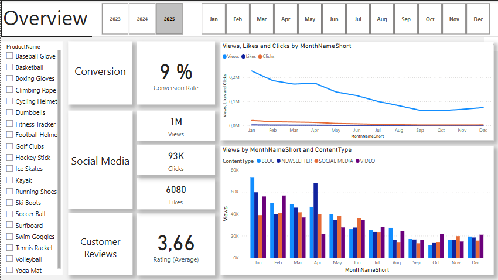

GitHub
GitHub
In this project, I carried out a full data analysis process using SQL, Python, and Power BI. The goal was to extract insights from a marketing dataset stored in a Microsoft SQL Server database. I used SQL to clean and structure the data, and Python (with libraries like pandas, NLTK, and matplotlib) to perform sentiment analysis and visualize additional insights. Finally, I built an interactive Power BI dashboard to present the key findings in a clear and business-friendly format. This project demonstrates my ability to integrate tools across the data pipeline—from data extraction and transformation to analysis and visualization.
Full documentation on github


